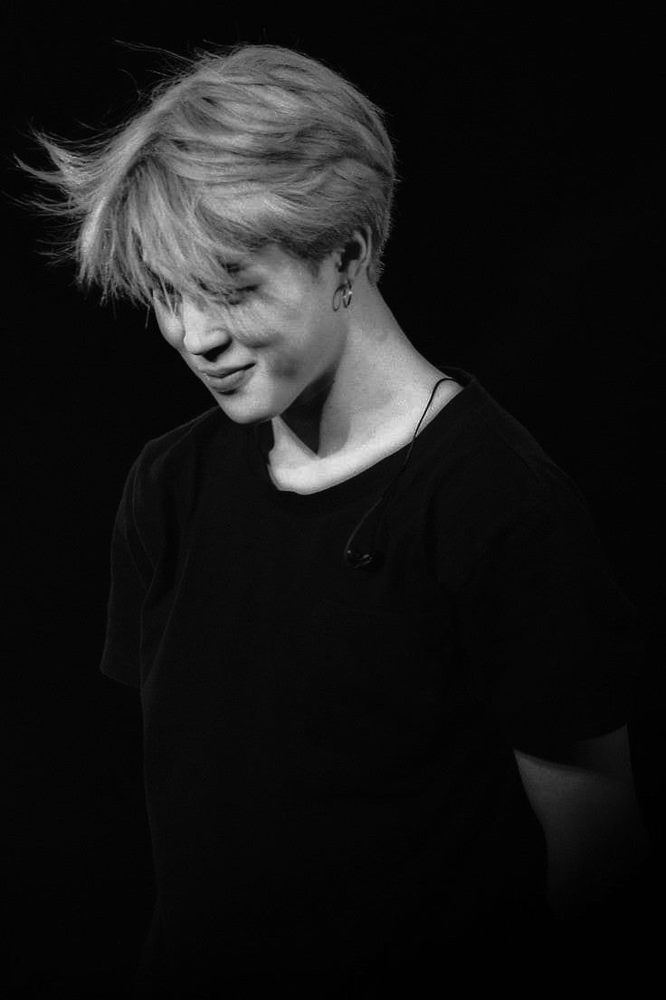
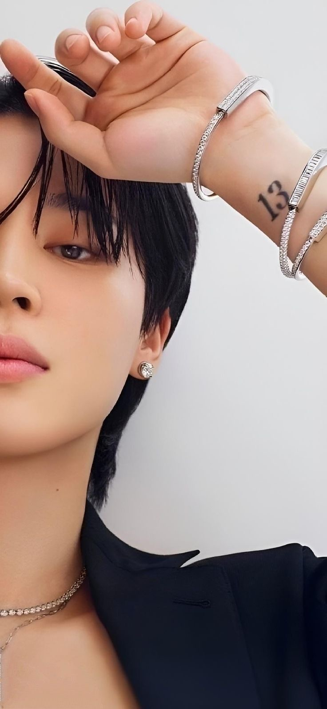

個人介紹
朴智旻 (Park Ji-min / 박지민)
1995 年 10 月 13 日
（填你的資料）
定位
主舞、領唱
特色
結合了強而有力的街舞與柔美細膩的現代舞，其獨特的聲線在 BTS 的歌曲中極具辨識度。
簡短介紹
Jimin 的成功並非一蹴而就，他的心路歷程被粉絲稱為「努力的代名詞」

Jimin 從中學開始接觸舞蹈，隨後以**首席（第一名）**的成績考入釜山藝高舞蹈科，是該校首位以舞蹈專長獲得首席入學的學生。雖然主修現代舞，但他對舞台的渴望讓他決定挑戰偶像選拔。

（他在 2012 年通過徵選進入 Big Hit（現 HYBE），是 BTS 成員中最後一位加入的。因為練習時間最短（僅約一年），加上當時風格與隊伍不完全磨合，他曾透露自己曾先後 8 次面臨被淘汰的邊境。
 ELLE KOREA 2023 Wallpaper.jpg)
為了跟上進度，Jimin 展現了近乎自虐的意志。練習生時期，他經常練習到凌晨 4 點，僅睡 2 小時後又去學校。甚至在出道後，他仍對自己的聲音與舞蹈極其嚴苛，曾因對現場表現不滿意而在後台流淚，這份對完美的追求讓他不斷進化。